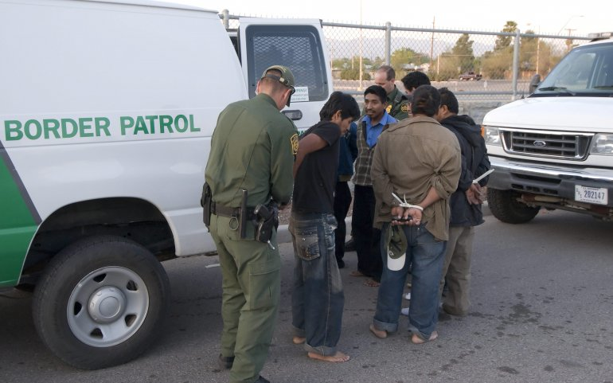

La inmigración aumenta

El Salvador, oficialmente República de El Salvador, es un país soberano de América Central ubicadoen el litoral del océano
pacifico con una extensión territorial de 21,041 km 2. En el año 2015 contaba con una población estimada en
6 377 195 habitantes, siendo el país más densamente poblado del continente americano.
El inmigrante en EUU
La gran mayoría de inmigrantes ilegales en los Estados Unidos son de América Latina.
Cerca del 60 por ciento proviene de México; otro 20 por ciento es de otros países de
América Latina,
en particular de El Salvador, Guatemala, y Honduras. Más de un millón de
inmigrantes ilegales también proviene de Asia y cientos de miles de Europa y Canada.